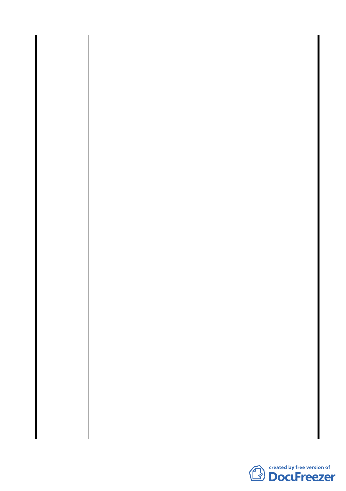

本案基地西北側平均坡度超過 30％土地，業於本案主要計畫
內變更為保護區，將維持原地形地貌，且未來並無任何開發
行為，並業經本市都委會 97.4.15 審議通過。
二、原基地內排水箱涵及管道經詢本府工務局水利工程處表示未
來將集中留設於基地內 8 公尺計畫道路下方，並由該處負責
維護。
三、本案細部計畫並未包含主要計畫之保護區範圍。另為維護基
地內山林資源，本案主要計畫內依自然地形條件，將原行政
區內平均坡度 30％以上不適建築之土地，變更為保護區，並
非將保護區併入計畫範圍。本案係為永建國小遷校用地，透
過變更回饋方式變更原中興山莊土地，並依主要計畫內容擬
定。至基地外相鄰之住宅區已有細部計畫，無須納入本計畫。
四、目前本案北側基地西側已有登山步道通往仙跡岩，另本案都
市設計管制要點除要求配合仙跡岩登山步道入口留設 150 平
方公尺廣場式開放空間，並於（二）國小用地設計管制第 4,5
點規定：4.西側坡地應配合生態教學，且登山步道口應與校
園建築相融合。5. 西側坡地應配合生態教學及登山步道，
作景觀步道之設計。建議俟元利建設取得保護區土地後，由
本府產業發展局及教育局等權管單位協助進行登山步道整
體規劃及闢建。
五、本案第 9 頁規劃構想示意圖橙色圈處，係指可建築開發之住
宅區。為利於閱讀，將於圖上加強標示。
交通方面：
一、現有巷道與永建國小使用關係：
1.計畫區內劃設 8 公尺計畫道路供永建國小及住宅區進出使
用。
2.本案交通計畫業規定國小用地應於基地內留設學童接送停
等空間，俾將臨時停車需求內部化，以避免影響木柵路車
流。
3.計畫區內 8 公尺道路、木柵路一段及光輝路等，已規劃為
緊急輸送、救援道路，並可延續通達本市其他地區。另於
都市設計管制要點要求南基地第 3 種住宅區基於消防救災
之需要，應留設南北向及東西向寬度至少 8 公尺之通道各 1
條，並連接計畫道路。
二、建案開發對交通影響，建議：
1.本案都市設計管制要點二、（三）車行空間已載明：本計畫
住宅區臨光輝路側，應於帶狀公共開放空間內留設 3.5 公
尺寬車行空間。故未來原 9 公尺寬之光輝路車行空間將達
16